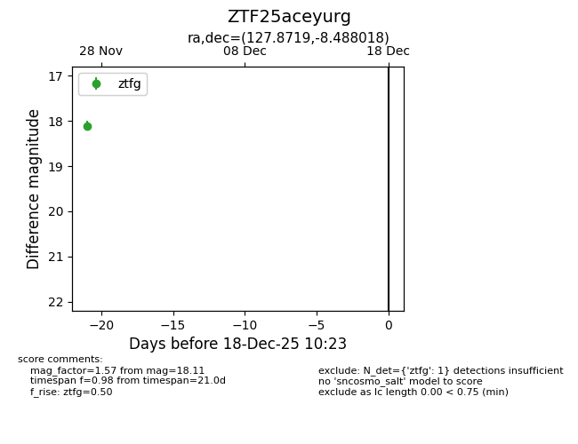
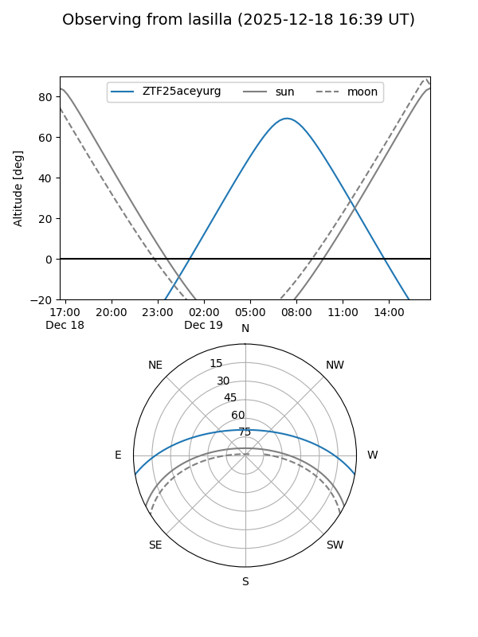
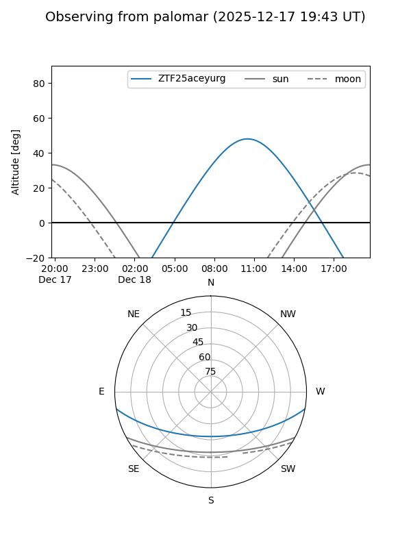

ZTF25aceyurg
Target ZTF25aceyurg at 2025-12-18 11:17
Aliases and brokers:
FINK: fink-portal.org/ZTF25aceyurg
Lasair: lasair-ztf.lsst.ac.uk/objects/ZTF25aceyurg
ALeRCE: alerce.online/object/ZTF25aceyurg
alt names
ZTF25aceyurg (ztf,fink_ztf)
Coordinates:
equatorial (ra, dec) = 127.8719,-8.48802
equatorial (HMS+DMS) = 08:31:29.26,-08:29:16.86
galactic (l, b) = (232.6960,+17.75059)
Photometry
last ztfg=18.11
1 ztfg detections
Lightcurve

Visibility


Additional plots